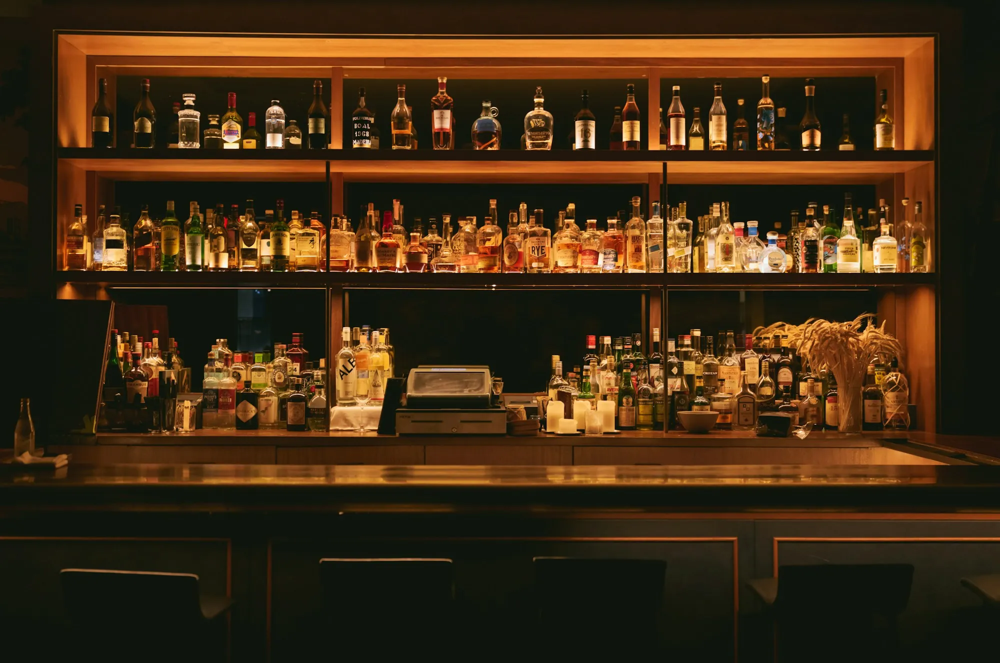
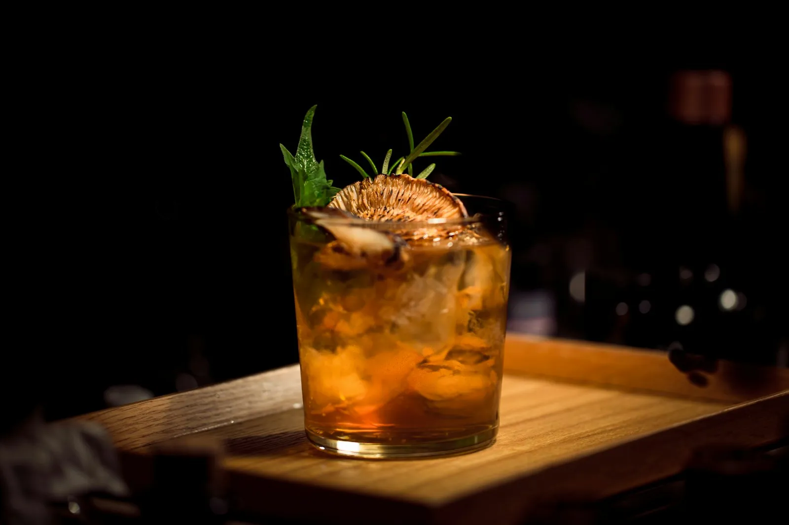
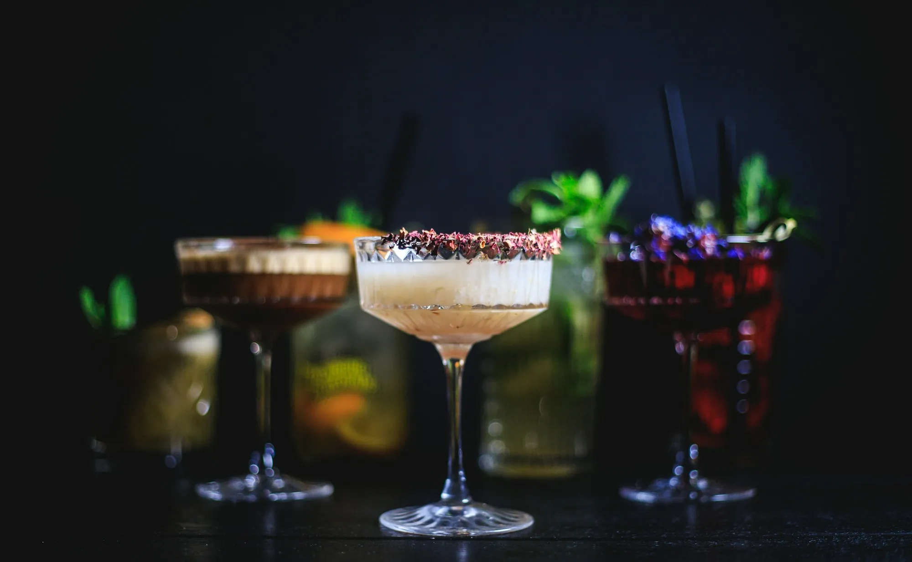
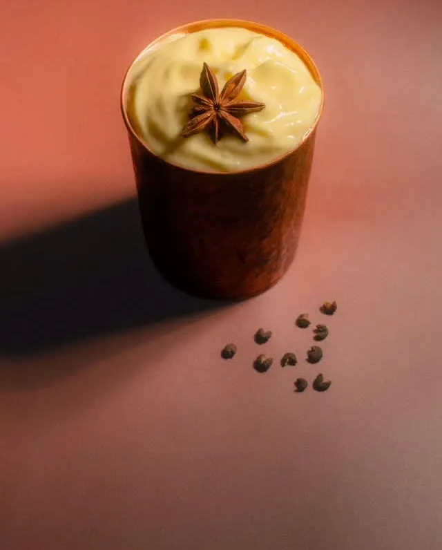
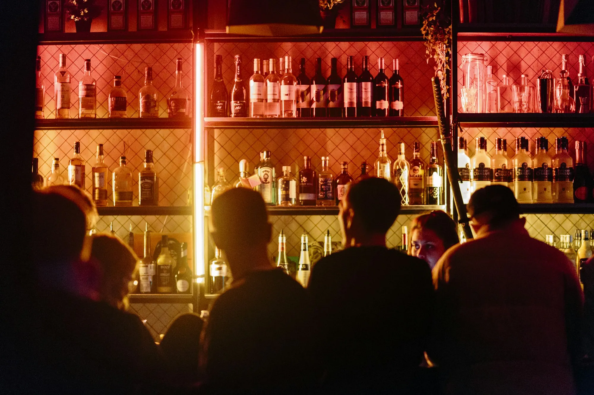
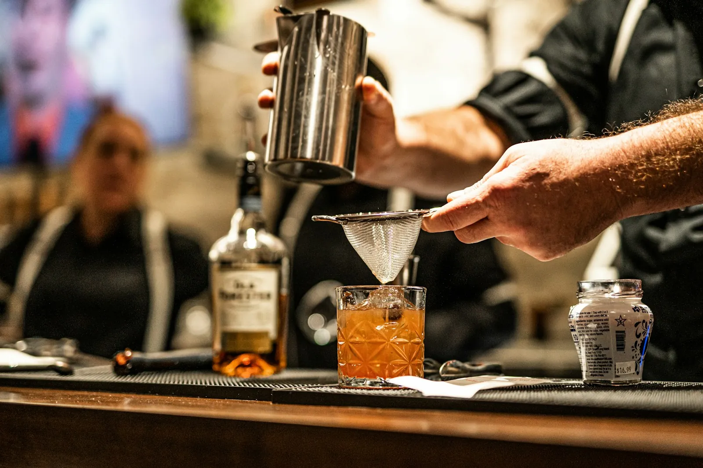
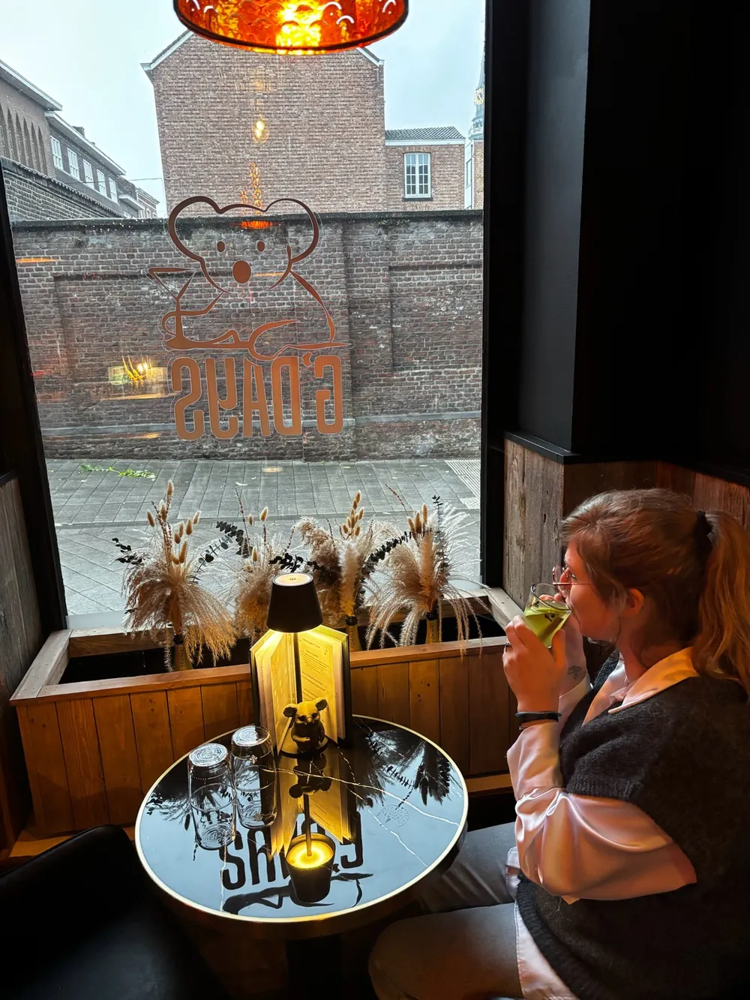

Ook om mee te nemen
Ook om mee te nemenMulled Jenever
Ons antwoord op glühwein, met de geest van Hasselt erin. Warm, kruidig, zoet en zuur.
- Limburgse appels
- Smeets Extra Jenever
- Smeets Peer
- Kruiden

Een Australische cocktailbar in de Persoonstraat. Met Tilly de koala aan de bar, Limburgse jenever in de shaker en een kaart die je nergens anders vindt. Grab your mates.


G'days opende in december 2025 met één idee: een cocktailbar waar mensen van alle slag samenkomen. Achter de bar staat Jake, die zijn Australische roots meenam naar Hasselt.
Sinds de zomer staan we er met drie. Drie paar handen, één tafel met een koala erop. Kijk maar.


Tilly zit aan de bar, ze staat op onze tafel geschilderd en ze kreeg haar eigen drankje. Gebaseerd op de Caramello Koala, het chocolaatje uit de kindertijd van elke Australiër.
Chocolade en karamel, in het zoetzure jasje van een daiquiri.

Een gewone cocktailkaart? Te saai. Dus maken we een glühwein met jenever en een cocktail die smaakt naar een frietje speciaal. Een paar die je bij ons kan tegenkomen:
Ook om mee te nemenOns antwoord op glühwein, met de geest van Hasselt erin. Warm, kruidig, zoet en zuur.

WedstrijdcocktailOnze inzending voor de Global Final van de Bartenders Society 2026. Op veler vraag komt hij af en toe terug, zolang de voorraad strekt.
 Zo Belgisch als het kan
Zo Belgisch als het kanGemaakt voor de Week van de Friet en af en toe terug. Jenever die naar het frietkot smaakt, maar dan in een coupe.

"What an amazing place!"Marieke Govaers op Google: "Niet een gewone cocktail bar. De moeite waard om te sippen. Jake is awesome 🙏"
"Super vriendelijke bediening en een unieke (Australische) cocktailkaart! 10/10, wij komen zeker terug!"
Alexanne Vervoort"Een mooie plek, een warm ontvangst en heerlijke cocktails... Alle ingrediënten voor een zeer geslaagde avond!!"
Annelies Huybrechts"Super gezellig en heel originele lekker cocktails!"
Sandra Panis
Teambuilding, verjaardag, vrijgezellen of gewoon zin om zelf te leren shaken. Wij stemmen de workshop af op jullie groep. Any reason is a good reason!
Binnenwandelen mag altijd. Met een groep, of wil je zeker zijn van een tafel? Stuur ons een mailtje of een berichtje op Instagram.
* Koopzondagen 15:00 tot 18:00 · eerste dinsdag van de maand 17:00 tot 23:00

Ik maakte deze demo voor jullie om te tonen wat er kan. Na een kort gesprek maak ik er iets veel persoonlijkers van, helemaal naar jullie wens.
Vrijblijvend. Ik kom langs of we bellen.
Op maat, op jullie eigen domein.
Geen voorschot. Jullie betalen pas als alles klaar is.
Hosting, domeinnaam en kleine wijzigingen, zoals nieuwe openingsuren.
Omdat een voorbeeld meer zegt dan een mail. Zo zien jullie meteen wat er kan, en het kost jullie niets.
Nee. Het gesprek is vrijblijvend. Vinden jullie het niks, dan is het daarmee gedaan.
Na ons gesprek staat jullie site binnen 10 tot 14 dagen online.
Zeker. Jullie domeinnaam kan gewoon blijven, de nieuwe site komt in de plaats van de oude.
Nee, dat doe ik op basis van ons gesprek. Eigen foto's zijn mooi meegenomen, maar niet nodig om te starten.